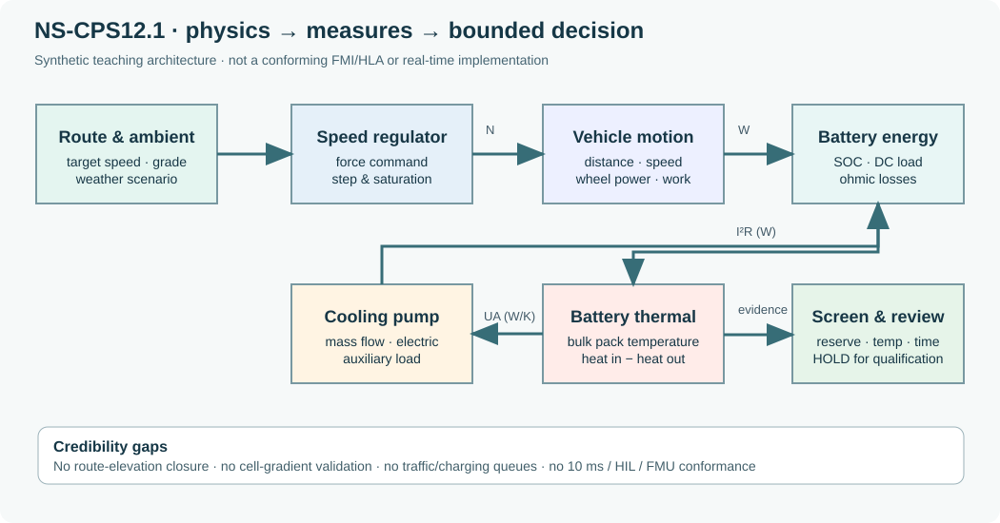

NS-CPS12.1 — Controlled multi-domain mobility engineering case
Book 12, Advanced Systems Modeling and Simulation · EN.645.758 · Version 1.0
Read the twelve chapters · Course outcomes · Book 11 operational simulation
Intended use and top-level decision
This is a synthetic single-vehicle screening and teaching model for mechanical, battery/electrical and thermal coupling. It inherits the campus mobility context of Book 11 without inheriting any false claim that its 24 periodic route loops represent measured fleet operations. The present decision is HOLD for deployment, procurement, cell-temperature qualification, controller/HIL readiness and FMI/HLA interoperability claims; the model is reproducible for a bounded teaching sensitivity comparison.
The full plant Python source consumes controlled inputs and writes 80 experiment rows plus a machine-readable summary. Inputs use the source course's 2,850 kg curb mass, with 300 kg assumed passenger load, 145 kWh usable battery, 650 V fixed current proxy, 180 kW motor limit, and 0.39 m wheel radius. Each scenario repeats five road segments (total 3.5 km) 24 times (84 km) using 0.5-second explicit Euler integration. The simulation integrates motion, state of charge and a single bulk pack temperature. It omits tire slip, regenerative pack acceptance, spatial battery gradients, realistic stops, controller sample-rate separation and charging events.

Open the editable evidence flow diagram.

How the numerical system works
The motor force request is bounded by \(P_{\mathrm{wheel}}\) limits, after subtracting rolling, grade and aerodynamic road resistance. Electrical consumption includes traction inefficiency, cabin and pump loads and a fixed-voltage estimate of ohmic heat; a first-order lumped thermal state integrates heating and flow-dependent heat transfer to ambient. The simulation computes mechanical, electrical and thermal balance residuals. These are internal checks, not validation against real systems.
The route has a net positive grade-weighted elevation change per period. Its repetition is an intentionally simple teaching scenario but not a valid closed-loop physical route; absolute range and charger scheduling must not be inferred from the 84 km figure. All scenarios start the pack at 31°C; hot soak and cell gradients are not modeled. An assumed charger_kw=100 is recorded for analytical charging exercises but is not used as a simulated event.
Worked results, regenerated from the controlled baseline
| Scenario | Mean modeled energy used (kWh) | Mean of modeled peak temperature (°C) | Mean ending SOC |
|---|---|---|---|
| Mild (22°C), high flow (0.30 kg/s) | 28.16 | 31.00 | 0.6858 |
| Hot (38°C), low flow (0.05 kg/s) | 32.38 | 41.88 | 0.6567 |
| Hot (38°C), high flow (0.30 kg/s) | 33.36 | 40.98 | 0.6499 |
| Cold (−15°C), high flow | 36.49 | 31.00 | 0.6284 |
| Hot (38°C), low flow, +25% grade sensitivity | 35.14 | 42.07 | 0.6377 |
The high-flow hot case is about 0.90°C cooler than the low-flow hot case but uses about 0.98 kWh more battery energy, under the invented pump/heat-transfer formulas. The model shows 16 of 16 bounded parameter draws meet each synthetic algebraic reserve, time and bulk-temperature threshold in each scenario; those passes are not a field reliability estimate or a real safety qualification. The average modeled 3.5 km driving repetition takes approximately 6.46 minutes, explicitly excluding stops, dwell, traffic and queues.
Reproducing and falsifying claims
From the repository root, use Python 3 with only the standard library:
python SE/K/B12/tools/step03_book12_coupled_vehicle.py --write
python scripts/check_step03_book12.py
python SE/K/B12/tools/step03_book12_coupled_vehicle.py --laps 1 --dt 1
python SE/K/B12/tools/step03_book12_coupled_vehicle.py --laps 1 --dt 0.25
The 1-second versus 0.25-second one-lap teaching convergence gives approximately 1.14516 versus 1.13776 kWh, respectively; finer steps should be studied at route guard transitions. These values come from the controlled model, not road tests. Run scripts/check_step03_book12.py after any source or configuration edit. Both requirement trace and credibility register explicitly identify what has not been validated; their status fields must not be upgraded merely because a solver completed.
Interface and review boundaries
The diagram separates operational mission, prescribed route, speed regulator, vehicle mechanics, battery storage, thermal state, coolant actuator, requirement checks and independent review. It is an architectural schematic: the program uses a monolithic sequential solver, not HLA, FMI, FMU packaging, Simscape, hardware synchronization, or a 10 ms controller implementation. Potential future joint Book 11/Book 12 work must couple a field-calibrated vehicle model to fleet dispatch, traffic, charging, availability and passenger events using explicit timestamps, units and provenance. A reviewer should first correct the route's elevation closure and pack thermal validation before attaching deployment claims.
For coverage, see the 12-week outcome crosswalk and editorial audit. All costs, physical response curves, route segments, efficiencies, and evidence gaps in this case are teaching constructions.